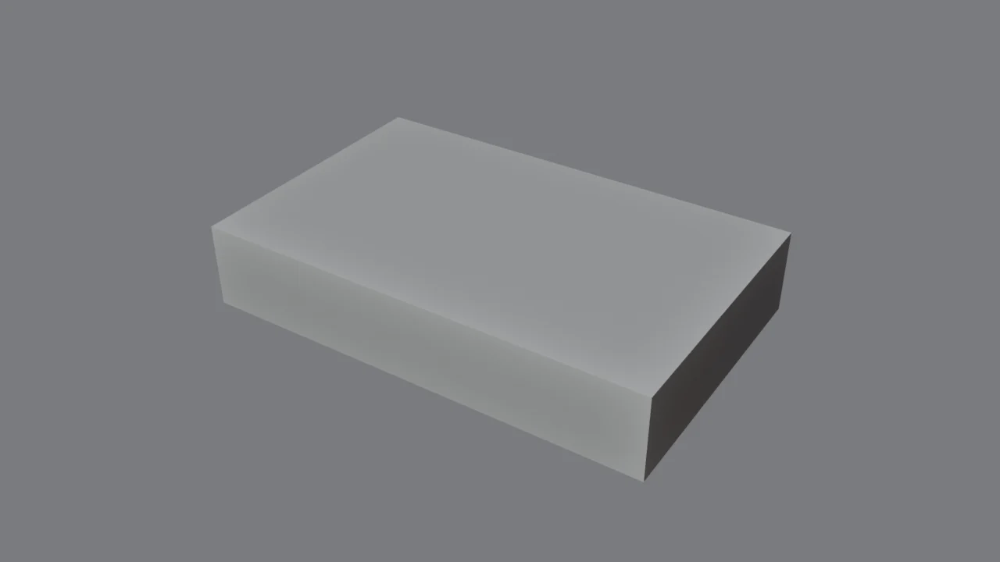
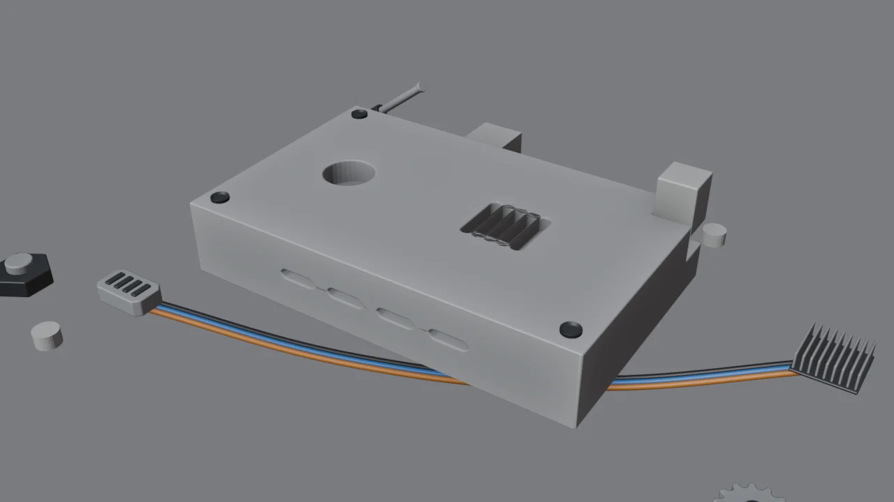
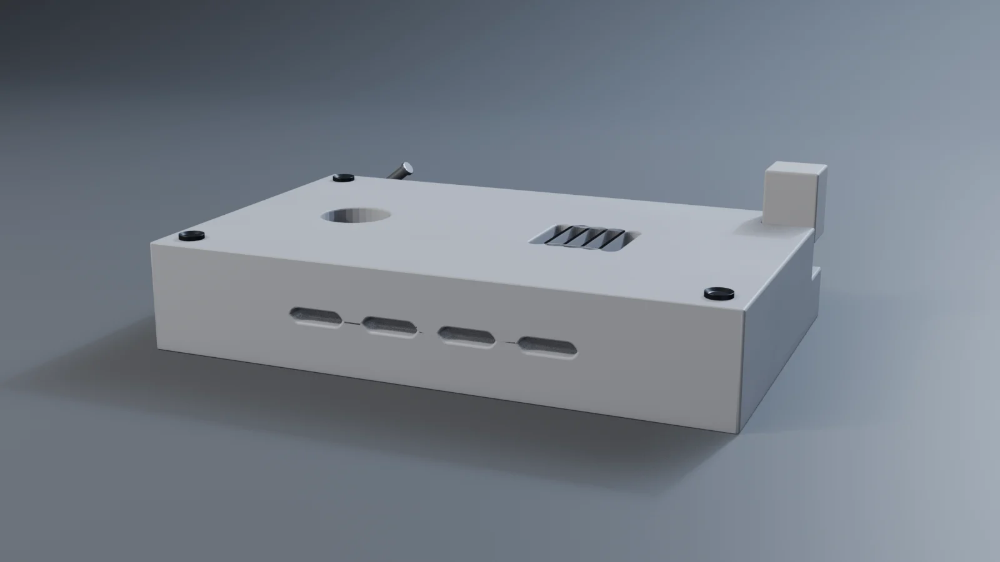

Antes y después // demo


Este resultado lo ha generado el propio addon en una prueba automática: Afilar, cortadores de ranura repetidos con En fila (rejilla), agujero, guiones en el frente, Rebanar una esquina, tornillos y LED como piezas, y alrededor un cable entre un conector y un disipador, un pistón y una tuerca.

Instalar // 1 minuto
- Descarga
forja_tools-1.0.0.zipcon el botón de arriba. No lo descomprimas. - En Blender:
Edit → Preferences → Get Extensions. - Arriba a la derecha, la flecha ⌄ → Install from Disk… → elige el .zip.
- Listo. En el visor 3D pulsa N → pestaña Forja. Y Shift+Alt+Q abre el menú circular.
El panel cambia según el modo: en modo objeto ves Acabado, Cortes, Simetría, Piezas y Revisión. En modo edición (Tab), las herramientas de modelado. El menú circular también cambia.
¿El atajo choca con otro? Preferences → Keymap, cambia el buscador a Key-Binding y escribe «shift alt q» para encontrarlo y cambiarlo. Y cada botón tiene una explicación si dejas el ratón encima.
Flujo de trabajo // receta
Bloquea la forma
Cubos, cilindros, perfiles… como en la ruta. Si quieres simetría: Espejo X.
Afilar
Un clic hace la receta del módulo 2: aplica escala, Shade Smooth, aristas duras, Bevel (Angle + Harden Normals) y Weighted Normal, ordenados. Después Ancho bisel: mueve el ratón para ajustarlo y gira la rueda para los segmentos.
Corta
Coloca el cursor sobre la superficie (Shift+clic derecho) y pulsa Ranura, Agujero, Panel… El cortador aparece ya cortando y seleccionado: muévelo con G, gíralo con R y escálalo con S. Con En fila lo conviertes en rejilla. O selecciona tus propios objetos, luego la pieza, y pulsa Cortar.
Cursor alineado: en la herramienta Cursor (barra de la izquierda), pon Orientation: Geometry. Así Shift+clic derecho también gira el cursor según la superficie, y los cortadores y piezas salen orientados.
Detalla en modo edición
Selecciona caras y usa Hundir o Sacar (Inset + Extrude), Línea de panel (surco alrededor de las caras) o Placa desde caras (la capa extra de blindaje).
Kitbash
Piezas: tornillo, tuerca, rejilla, LED, engranaje, disipador, conector, toma de aire. Pistón animable y Cable entre dos objetos, con caída. También en Shift+A → Piezas Forja.
Revisa, viste y renderiza
Revisar (y Arreglar si hace falta), materiales en un clic y Estudio de render.
Todas las herramientas // referencia
| Herramienta | Qué hace | Aprende cómo funciona |
|---|---|---|
| ACABADO · modo objeto | ||
| Afilar | La receta completa en un clic. Ajusta ángulo, ancho y segmentos en el panel de la esquina inferior izquierda (F9). | Módulo 2 |
| Ancho bisel | Interactivo: ratón = ancho, rueda = segmentos, clic = aceptar. | Módulo 2 |
| Step | Aplica el bisel grande y añade otro pequeño encima (bisel doble). | — |
| Ordenar pila | Mirror → Array → Solidify → Boolean → Bevel → Subdivision → Weighted Normal. | Módulo 3 |
| CORTES · modo objeto | ||
| Cortar / Unir / Intersecar | Selecciona cortadores y luego la pieza. Boolean no destructivo; el cortador se pone en wire, se oculta del render, va a la colección Cortadores y se emparenta con la pieza. | Módulo 3 |
| Rebanar | Corta y crea una pieza aparte con lo cortado (paneles que se abren, tapas). | Módulo 3 |
| Nuevo cortador | Ranura, agujero, caja, hexágono, guion o panel, en el cursor 3D, ya cortando. | Módulo 3 |
| Ver/ocultar · Aplicar | Oculta todos los cortadores, o aplica los booleanos y borra los que ya no se usan. | Módulo 3 |
| SIMETRÍA Y REPETICIÓN · modo objeto | ||
| Espejo X / Y / Z | Con un objeto: simetría con recorte. Con varios: refleja respecto al activo. | Módulo 9 |
| En fila | Array lineal. Sobre un cortador, deja siempre un hueco entre copias. | Módulo 3 |
| En círculo | Array radial alrededor del cursor 3D (bridas, aletas, dientes). | Módulo 5 |
| MODELADO · modo edición | ||
| Hundir / Sacar | Inset + Extrude en un paso, por región o cara a cara. | Módulo 1 |
| Línea de panel | Surco no destructivo alrededor de las caras seleccionadas. Reduce el bisel si no cabe. | Módulo 3 |
| Placa desde caras | Copia las caras como una placa aparte, con margen, separación y grosor. | Módulo 6 |
| Support loops | Dos apoyos pegados a las aristas seleccionadas, para Subdivision. | Módulo 4 |
| Pliegue | Edge crease en las aristas seleccionadas. | Módulo 4 |
| Círculo perfecto | Redondea un bucle de vértices (como LoopTools → Circle). | — |
| PIEZAS · modo objeto | ||
| 8 piezas | Tornillo, tuerca, rejilla, LED, engranaje, disipador, conector y toma de aire, en el cursor, con bevel y materiales. Si hay una pieza activa, se emparentan con ella. | Módulo 5 |
| Pistón | Camisa + vástago con Damped Track entre dos anclajes. Mueve un anclaje y se estira. | Módulo 7 |
| Cable | Uno o varios cables con caída entre los dos objetos seleccionados. | Módulo 5 |
| MATERIALES, RENDER Y REVISIÓN | ||
| Materiales | Pintura con desgaste en bordes y suciedad (Cycles), metal oscuro, goma, luces y cristal. En modo edición se aplican a las caras seleccionadas. | Módulo 8 |
| Estudio de render | Ciclorama, tres luces, cámara de 50 mm, AgX y Glare alrededor de la selección. | Módulo 0 |
| Revisar | Escala, orden de la pila, booleanos sin cortador, n-gons con Subdivision, agujeros, duplicados… El informe queda en el panel. | Módulo 2 |
| Arreglar | Aplica escala, corrige normales, une duplicados y borra lo suelto. | Módulo 2 |
Frente a los addons de pago // honestidad
Los addons profesionales llevan años de desarrollo y hacen más cosas. Esto es lo que cubre Forja Tools y lo que no:
| Addon de pago | Su función estrella | En Forja Tools |
|---|---|---|
| HardOps | Sharpen / Step / bWidth, Mirror, gestión de modificadores | ✔ Afilar, Step, Ancho bisel, Espejo, Ordenar |
| BoxCutter | Dibujar el corte directamente sobre la superficie | ≈ Cortadores prefabricados en el cursor (no se dibujan a mano alzada) |
| MESHmachine | Chaflanes variables, arreglar booleanos | ≈ Revisar + Arreglar + bisel sin manchas (sin edición de chaflanes) |
| Kit Ops | Insertar piezas de una biblioteca | ✔ 8 piezas procedurales + pistón + cable (y tu Asset Browser del módulo 5) |
| DECALmachine | Decals realistas | ✘ No incluido (lo verás en el módulo de decals) |
| MACHIN3tools (gratis) | Menús circulares | ✔ Menú circular Shift+Alt+Q, que cambia según el modo |
Por qué así: para alguien que empieza, un addon que lo hace todo con magia es un arma de doble filo. Forja Tools solo automatiza lo que la ruta te ha enseñado. Si un botón hace algo raro, sabes qué hay debajo y puedes corregirlo a mano.
Cómo se ha probado // calidad
Cada herramienta se ejecuta en una prueba automática dentro de Blender 4.2 LTS (tools/test_addon.py), que comprueba los resultados y genera las imágenes de esta página. Al probarlo encontramos y corregimos dos fallos que también te pasarían a mano:
- Copias de un cortador que se tocan (Array con separación 1) → el booleano devolvía una pieza vacía. Ahora los booleanos usan Self Intersection y Hole Tolerant, y En fila deja siempre un hueco.
- Triángulos negros junto a líneas de panel → los causaba Clamp Overlap del Bevel. Ahora está desactivado y el ancho se limita automáticamente.
Lo que no se ha podido probar automáticamente: el aspecto del panel y del menú circular en pantalla, y la herramienta interactiva Ancho bisel (necesita ratón). Si algo no se ve bien en tu Blender, dímelo y lo arreglo.